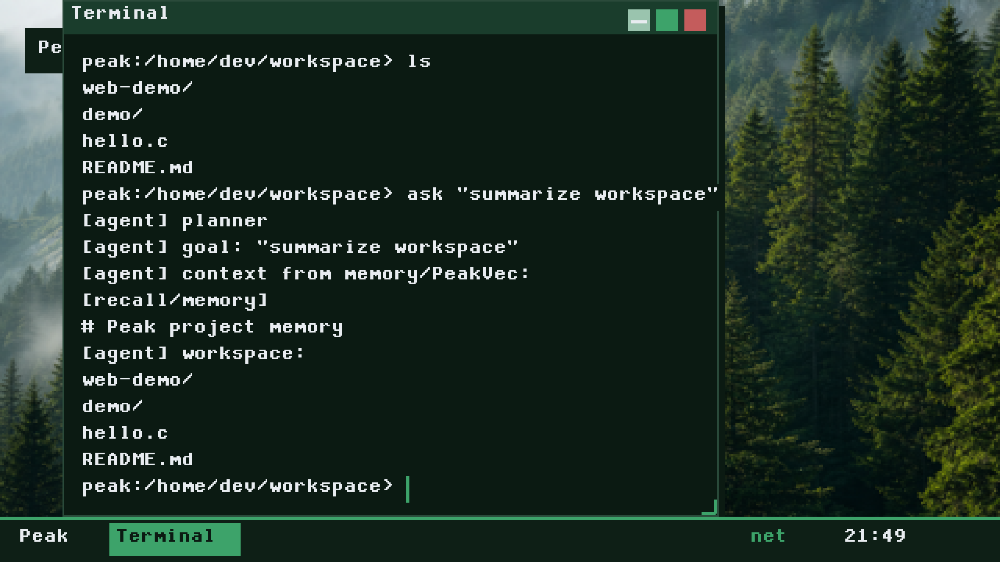
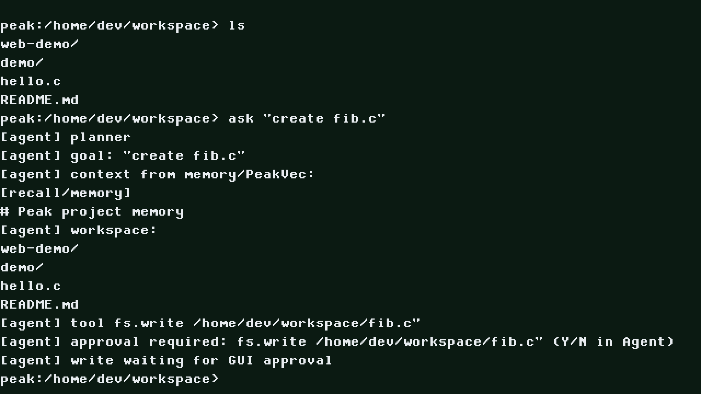
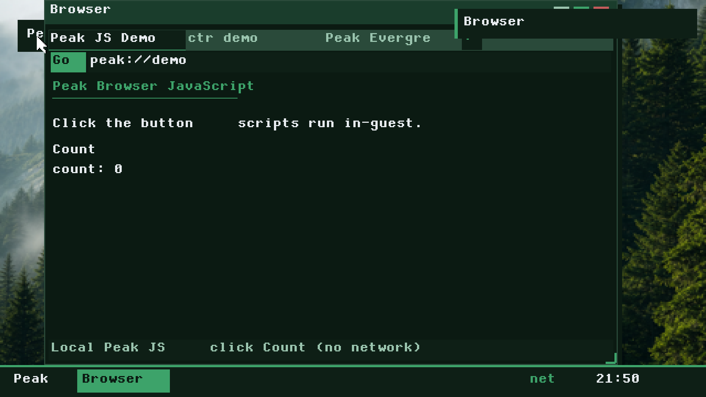
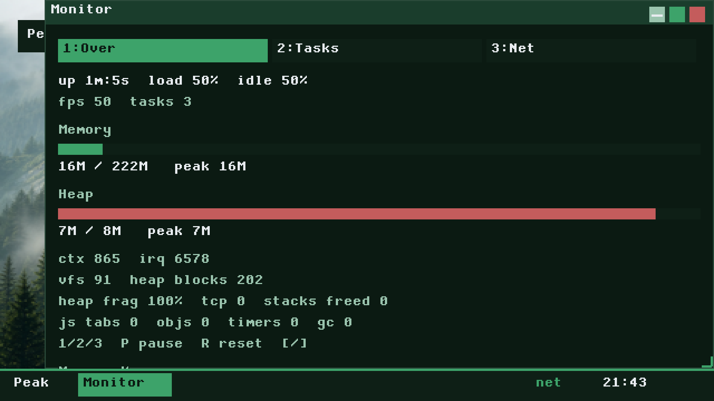

01 — Thesis
The agent belongs in the kernel’s neighborhood, not on the host.
Peak OS is Peak Evergreen’s R&D bet that an “AI-first” developer environment should be a real operating system — not a chat panel glued to Linux, and not a hobby kernel that stops at a shell prompt.
Most hobby OS projects prove that boot works. Most “AI OS” demos prove that a model can call tools over SSH. Peak aims past both: a freestanding kernel with Peak-authored BIOS and UEFI loaders (and a Raspberry Pi shim), a VFS workspace, an in-guest planner called peak-agent, a multi-window desktop, an HTTP(S) browser surface, containers, and a local vector index — all Peak C inside the guest.
Agents, tools, and project context are system primitives. Inference stays an in-guest planner. There is no host LLM bridge by default.
That sentence is the product architecture. The north star is deliberately small:
userspace shell → peak-agent (local) → tools (fs / exec)
Under /var/peak/ live the durable primitives: workspace policy, action audit, session memory, and PeakVec recall. Capabilities gate what a subject may touch. Privacy grants gate the network. Opening the desktop does not phone home.
02 — The problem shape
What “AI OS” usually means — and why that is not interesting enough.
Today’s default path is convenient and opaque at once: a general-purpose Linux host, a container runtime, a cloud model, and a sidecar that shells out. The “operating system” part of the story is borrowed. The agent’s memory is an app concern. The trust boundary is fuzzy — serial bridges, host proxies, and copy-pasted credentials blur where the guest ends and the lab laptop begins.
Hobby kernels have the opposite failure mode. They stop when the serial console prints hello. Networking, TLS, a desktop, a browser, and an agent that can write files under policy never arrive — because those are years of vertical integration, and the demo does not require them.
Peak OS treats that gap as the research question: can you build a single-user research workstation where the interesting parts are Peak-authored, inspectable, and local-first — without pretending to be Linux?
The purity constraint makes the claim falsifiable. CI runs scripts/purity-check.sh: no Limine, no COM2/COM3 host bridges, no peak-host-proxy, no agent_poll_host. If the agent works, it works in-guest. If HTTPS works, Peak’s stack spoke TLS. That honesty is the point of the project.
03 — Trying to solve
Problems Peak OS is actively attacking.
Not every systems problem — a focused set that makes an AI-native workstation coherent.
Vertical developer surface
-
Past the bootloader
CLI utilities, multi-window desktop, browser tabs, net tools, and
ctrdemos inside one Peak kernel — so “it boots” is not the end of the story. - In-guest networking that is real DHCP, DNS, TCP, TLS 1.2/1.3, HTTP/2 ALPN client, WebPKI and optional TOFU — Peak C, not a host userspace stack borrowed for the demo. Live CDN HTTPS bodies are still often empty (Partial — TLS fingerprint / B-HTTPS-H2).
- Dual-arch path x86_64 QEMU (BIOS/UEFI) as the daily research loop; flashable aarch64 Raspberry Pi SD image with Pi 3 as the primary hardware gate.
Local-first agency
-
Agent as OS citizen
ask "…"and a GUI Agent window drive a bounded planner over allowlisted tools (fs.*,net.*,mem.recall, …) with policy, audit, and write approval. - Context as infrastructure Session memory and PeakVec (hashed n-gram embeddings, cosine search, blobstore-backed) sit beside VFS — not as a SaaS RAG bolt-on.
-
Privacy as product property
No telemetry. Network-idle GUI. Explicit persist profiles (
private/workspace/full). Explicit net grants and a kill switch. Kerckhoffs: schemes public, seeds secret.
Trust you can read
Capability bits (CAP_AGENT, CAP_VEC, CAP_NET_*, …), NX/W^X, ASLR/KASLR/canaries, fail-closed entropy for release crypto, and an audit log under /var/peak/audit.log are part of the narrative — not a separate “security phase” bolted on after the screenshots look nice. Peak Evergreen wants the research workstation to be explainable: what persisted, what went on the wire, what the agent was allowed to do.
04 — Not solving
What Peak OS is deliberately not.
Scope discipline is part of the R&D story. Calling non-goals early keeps the page honest when it lands on peakevergreen.
-
Not a Linux ABI / glibc userspace
Peak
/bin/*builtins and ELF scaffolding — not “drop your Debian userspace on our hobby kernel.” That would collapse the purity claim. - Not a host LLM sidecar No serial agent bridges, no default remote model. The planner is a bounded in-guest rule/intent engine. An optional remote LLM over TLS may exist later; it must never be the default path.
-
Not Chromium, not OCI, not Pinecone
The browser is a Peak JS + DOM/CSS subset.
ctris not runc/containerd (no image pulls, netns, or process isolation theater). PeakVec is not a cloud vector database — no model weights, local hashed embeddings only. - Not GPU / Wayland / multi-monitor Software linear framebuffer and compositor. Commercial polish targets (1080p @ UI scale 3) exist; hardware accel is deferred unless Monitor proves a new bottleneck.
- Not production hardened — yet Treat Peak as experimental research / commercial-hobby software. Verified boot and signed release ceremony are incomplete. Full ring-3 browser isolation is still deepening. Session lock is a privacy cover (Enter unlocks) — not authentication.
- Not defending the hostile hypervisor Threat model non-goals include a hostile QEMU host and physical bus attackers / hardware side channels. Secure deletion is best-effort against snapshots you do not control.
- Not done on Pi silicon Pi 3 SD images build in CI; HDMI/USB/PeakFS hardware acceptance is still the gate. Pi 4/5 Ethernet, xHCI, Wi‑Fi, and GPU paths are staged or stubs. SMP secondaries stay parked.
05 — What’s interesting
Why this is worth an R&D page.
Purity as a product constraint
Most demos cheat quietly. Peak encodes the cheat as a CI failure. The guest must carry its own boot, net, TLS, agent, and UI. That forces architecture: a versioned BootInfo ABI from Peak loaders into kernel_entry, thin arch_* / platform_* / blockdev / netdev seams, and portable subsystems above them (VFS/PeakFS, GUI, Peak JS, peak-agent, PeakVec).
Agent + PeakVec as kernel-adjacent primitives
Tool catalog and policy live in-kernel. Writes can require GUI Y/N. Turns land in session memory and upsert into PeakVec for semantic recall. Syscalls SYS_agent and SYS_peakvec make the story systemic rather than “an Electron app we also ship.” The interesting claim is not “we have an LLM” — Peak does not, by default — but “workspace agency has a policy surface, an audit trail, and local recall without cloud embeddings.”
In-guest “cloud-shaped” surfaces without Linux
TLS with WebPKI, a software-composited desktop, a browser that fetches only on explicit Go, and a tiny container runtime that serves demos over Peak TCP. None of these need to win a standards bake-off to be research-valuable. Together they answer: does the stack compose?
Enhancement-pass culture
The tree carries a long sequence of numbered passes (through Wave 7 / ~Pass 158), locked by smoke-cli gates. That is not marketing cadence — it is how Peak Evergreen keeps vertical integration from rotting. The changelog is a research log of “what became true in the guest this week.”
06 — Architecture
One path from firmware to shell.
Firmware (SeaBIOS, OVMF, or VideoCore) hands off to a Peak loader — BIOS El Torito, UEFI application, or Pi shim. The loader builds BootInfo (memory map, framebuffer, HHDM, optional DTB) and enters the higher-half kernel. Shared subsystems — VFS, GUI, net, agent — sit above the HAL. The user meets a shell and a desktop.
Higher-half at 0xffffffff80000000, HHDM at 0xffff800000000000. PeakFS streams persist to PeakDisk (ATA on PC, SDHCI on Pi). Blobstore backs large objects and PeakVec pages. None of that needs to be memorized to understand the thesis — but it is why the screenshots are not a theme skin over someone else’s kernel.
07 — Proof surface
What it looks like in QEMU today.
Captured from the guest framebuffer. Relative paths point at assets/screenshots/ in this repo — rewrite them when you drop this file onto a personal or peakevergreen site.




08 — Status & honesty
Where the research sits.
Baseline tag v0.1.0-mvp; current line 0.3.0-ai. The interesting work is already in-tree: agent, PeakVec, TLS/WebPKI, desktop polish passes, browser interactive-bar code, container demos. Honest gaps are also in-tree — live public HTTPS body fetch is still Partial (B-HTTPS-H2), documented rather than papered over.
- x86_64 QEMU
- Supported — SeaBIOS smoke in CI; UEFI locally.
- aarch64 QEMU
- Supported — serial smoke in CI.
- Raspberry Pi 3
- SD image built in CI; HDMI/USB hardware acceptance still pending.
- Pi 4 / 5 I/O
- Ethernet, xHCI, Wi‑Fi, GPU accel — not ready.
- Security posture
- Experimental. Verified boot / signed releases incomplete. Report issues via SECURITY.md.
- License
- MIT for Peak-authored code. Raspberry Pi boot/Wi‑Fi firmware is a documented binary exception.
Privacy promises that already hold as product claims: no telemetry; local-only agent; network-idle GUI; explicit persistence; explicit network disclosure; identifier minimization; release serial must not print seeds, canaries, or passphrases.
If you only remember one sentence: Peak OS is trying to make an AI-native research workstation true in the guest — and equally trying not to fake that truth with Linux, Limine, or a host bridge.